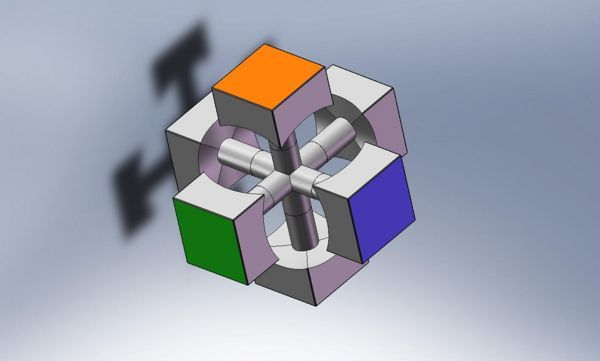
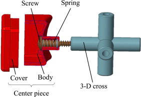
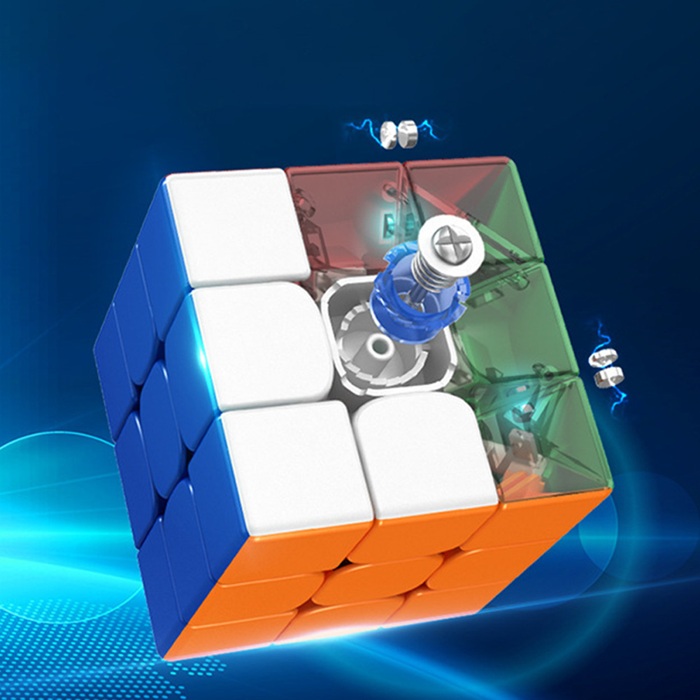
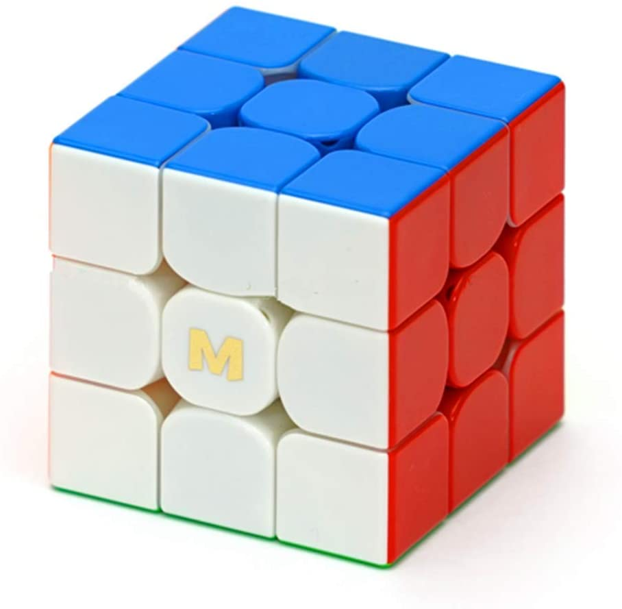
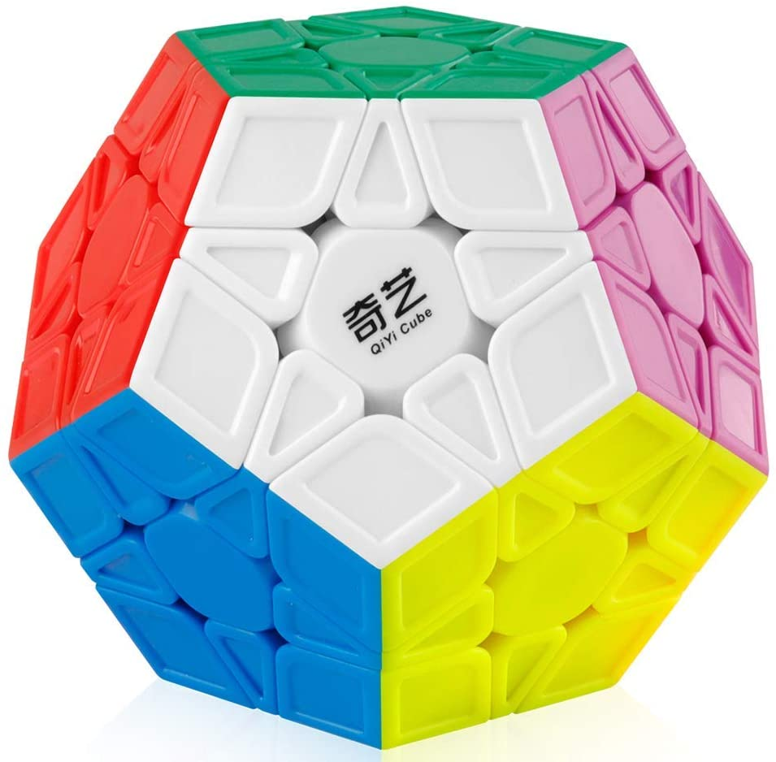
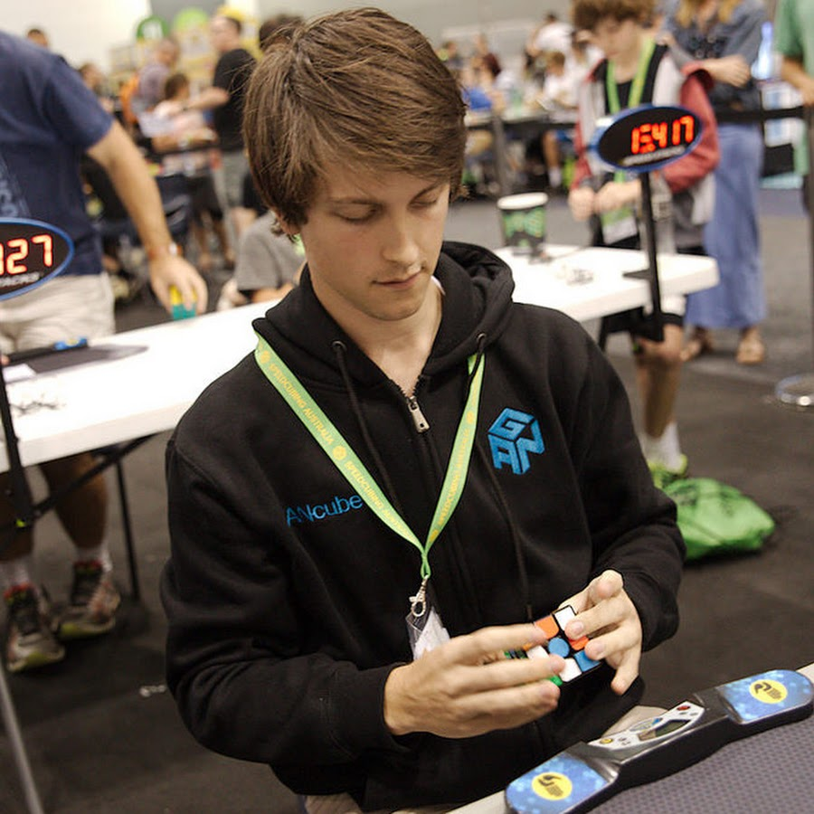
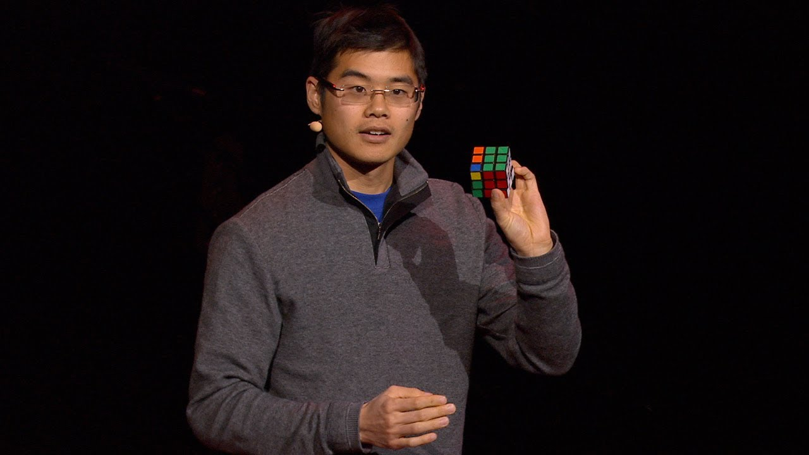

Erno Rubik is a Hungarian inventor, architect and professor of architecture at the Budapest College of Applied Arts, where he created the cube. He is significant due to his invention, and kickstarted the start of a crazy trend.
Erno Rubik is a Hungarian inventor, architect and professor of architecture at the Budapest College of Applied Arts, where he created the cube. He is significant due to his invention, and kickstarted the start of a crazy trend.
The Rubik’s Cube is a 3-D combination puzzle invented in 1974 by Hungarian sculptor and professor Erno Rubik. Rubik originally wanted to create a tool for his students to visualize an object which can be turned, but not fall apart in the process. He scrambled it, and realized that he created a puzzle. He applied for a patent in 1975 under the name "Magic Cube", and was successful to do so.The first batches of the cube were noticed by Seven Towns founder Tom Kremer and released it internationally in 1979. Between 1980 to 1983, an estimated 200 million cubes were sold, making it one of the most successful toys of all time.
The cube consists of 12 edge pieces, and 8 corner pieces, totaling 20 pieces. It features a core that looks like this: Within the core, springs and screws hold the pieces together, creating tension enough to be able to turn the cube quickly, but not tight enough where the pieces won’t fall out. Many speedcubes however, (professional Rubik's Cubes) use magnets and different parts in the core in order to make the cube easier to align. The magnets in these cubes are positioned in the edge and corner pieces, like this: 
Despite the fact that the puzzles related to Rubik's Cubes are called "Rubik’s Cubes", some of the puzzles aren't in fact cubes. The Rubik’s Cube has a broad range of puzzles, with many shapes and sizes. Generally, there are 2 types of puzzles; cubic and non-cubic.  Cubic puzzles, as the name suggests, are cubic in shape, and do not shapeshift, or change shape as they turn. The image on the top is called a 3x3, and is an example of a cubic puzzle. The image on the bottom is a puzzle called the megaminx, a puzzle shaped like a dodecahedron. Unlike cubic puzzles, non-cubic puzzles have more unique shapes, sometimes featuring shapeshifting, or changing of the shape when turned.
Despite its mundane appearance, cubing is actually a very competitive niche, with well over 150,000 people who have entered a competition. A competition can have up to 17 events, but generally features 5-10 events per competition. I will include 5 puzzles which are standard in most competitions. It’s also an extremely time sensitive hobby, where cube times are recorded down to the hundredth of a second. You will see some records that have a time difference of 0.01 seconds or even have the same time, which proves how time sensitive cubing is.
Erno Rubik is a Hungarian inventor, architect and professor of architecture at the Budapest College of Applied Arts, where he created the cube. He is significant due to his invention, and kickstarted the start of a crazy trend.
 You might’ve noticed some repeating names in the world records section, such as Feliks Zemdegs and Max Park. Well, Feliks Zemdegs is thought to be the greatest cuber of all time. He has been a prodigy ever since he started cubing. He first solved the cube in 2008 from a YouTube tutorial, and became incredibly fast. Solving the cube in under 20 seconds, or being “sub-20” is when you’re considered as “fast” in the cubing realm. Well, he achieved that in 4 months, which for context, took me around 2 years to achieve. During his 2nd ever competition, he broke the world record, and it was then where people noticed the giftedness of Feliks.
 Founder of the World Cube Association, Mao is a trailblazer for the Rubik’s cube trend, providing hundreds of thousands of people with competitions daily in every country in the world. Mao created the first official organization for the records and competitions for the Rubik's Cube.
Phil Yu is the founder of thecubicle.com, the largest puzzle retailer in the world. Originally a competitive cuber (being one of the fastest one handed solvers in the world), Phil found his love for cubing in 2010. He has a Juris Doctor and a Bachelor of Music, where he met James Chang to start his company “thecubicle.com”.